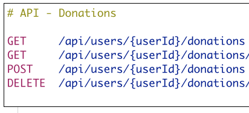
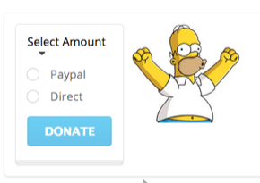
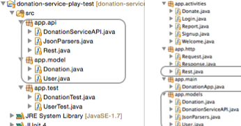
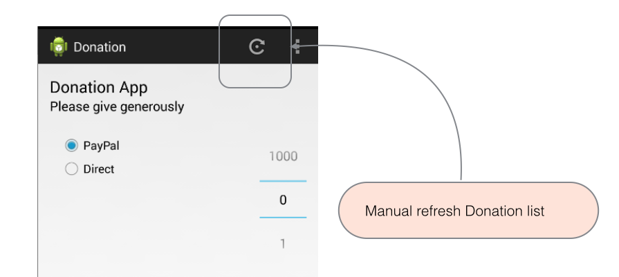
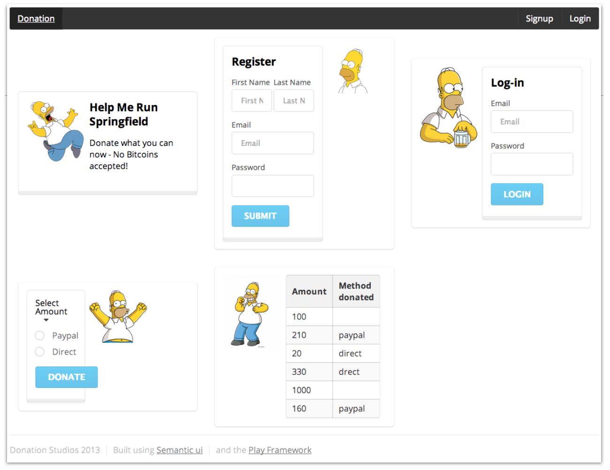

Donation-Android V6
12: Services


A review of the Donation-Andorid V6 app, which we completed last week. This version of the app incorporates the User->Donation relationship, as embodied in the donation-play-service app the REST patterns it provides.
Donation Service UI

The Donation Play App is given a UX based on Semantic UI. This version is 'segmented' - facilitating interesting aggregation of views with minimal effort.
Donation Projects

A look at the full family of donation projects again - android, play and test. An examination of their similarities and differences.
Intent Services

Donation Android V6 suffers one significant drawback - new tweets arriving at the server will not be propagated to android clients. Here we look at one way of solving this problem.
Donation-12

Refactor Donation Android client to refresh donations list using a background service in a non-blocking call, replacing the present Response interface.
MyTweet-Assignment-02

This is a follow-on lab to MyTweet-Assignment-01. The lab provides guidance but not comprehensive instructions (which is reasonable given that it relates to an assignment). The guidance addesses issues that might otherwise prove quite difficult to resolve.
Donation-11

Using the latest Semantic UI, introduce a simple but well structured User Interface into the donation-service-play application.
MyTweet-Assignment-03

This lab has been developed to assist in the preparation of the current assignment, which comprises the development of a MyTweet suite of apps. The lab explains how to capture geolocations using map markers and also how to display a user's list of residences as markers on a map. A version of MyRent has been refactored to include sample features since MyRent structure closely resembles that of MyTweet.